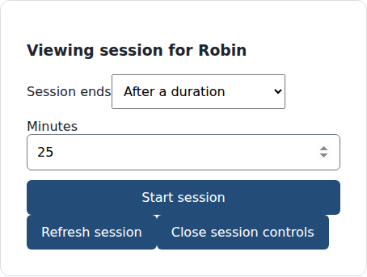

Pick what plays.
Give your child a shelf of videos from your own library. You choose what goes on it and when it's time to stop.
Set up FamilyTVUse your existing library
Point FamilyTV at the same folder Plex uses. Pick the episodes you want to import. Both apps can read the same files.
Choose for each child
Approve an episode for one child or several. Each child can browse their own choices on Android TV or in a browser.
Finish by dinner
Set a finish time from your phone. FamilyTV shows videos that fit the time left and ends the session at the cutoff.
Try the development build
The server runs in Docker and keeps profiles and approvals in your household database. One approved clip is enough to try it. The TV setup instructions cover pairing and the current test build.

Report a problem
Issues are monitored. Report a bug or request a feature on GitHub.